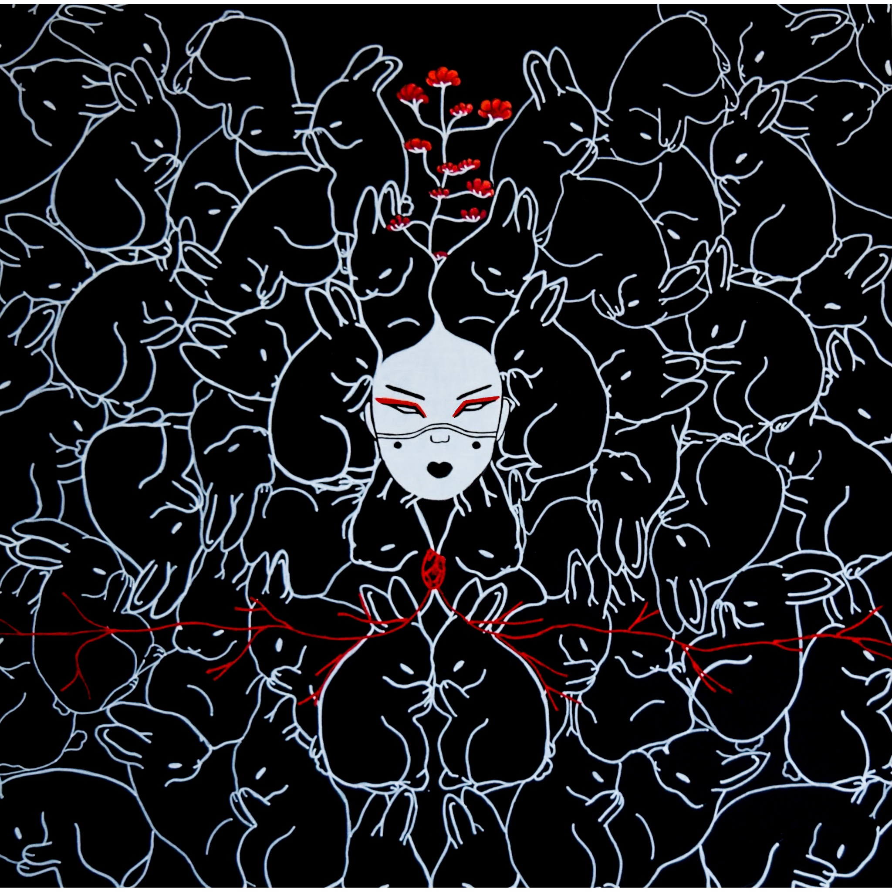
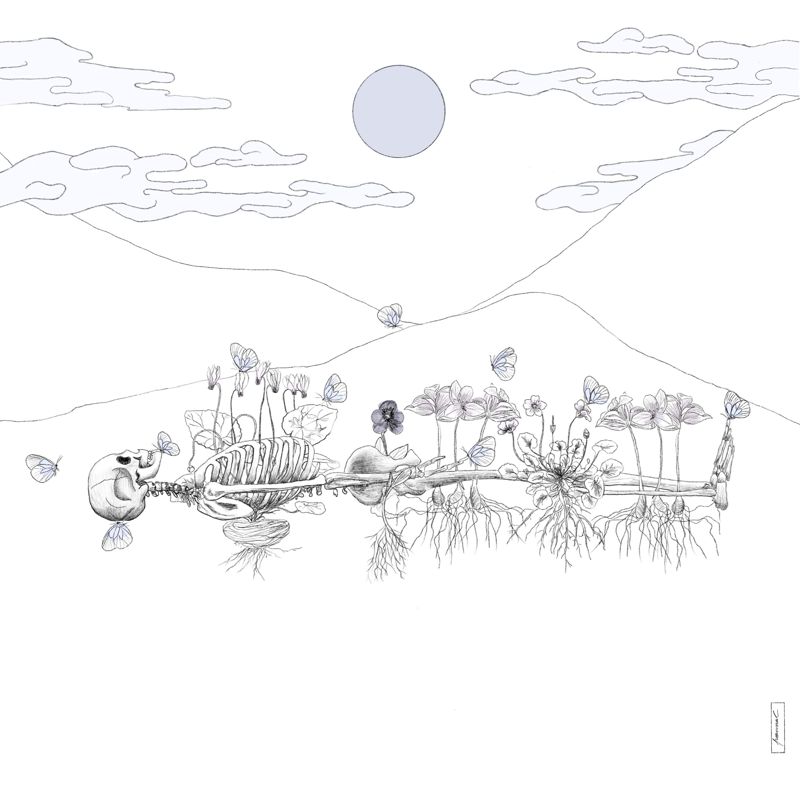
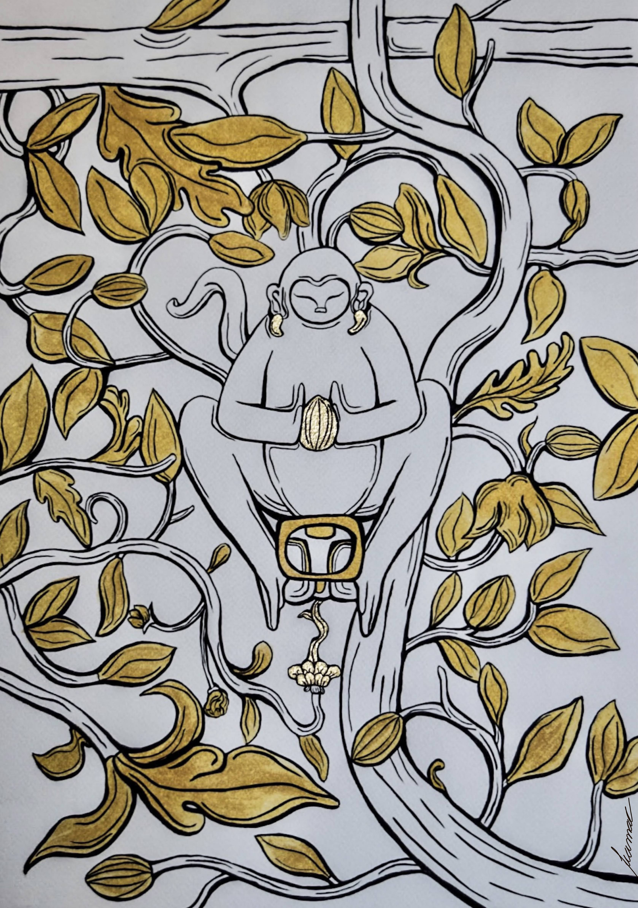
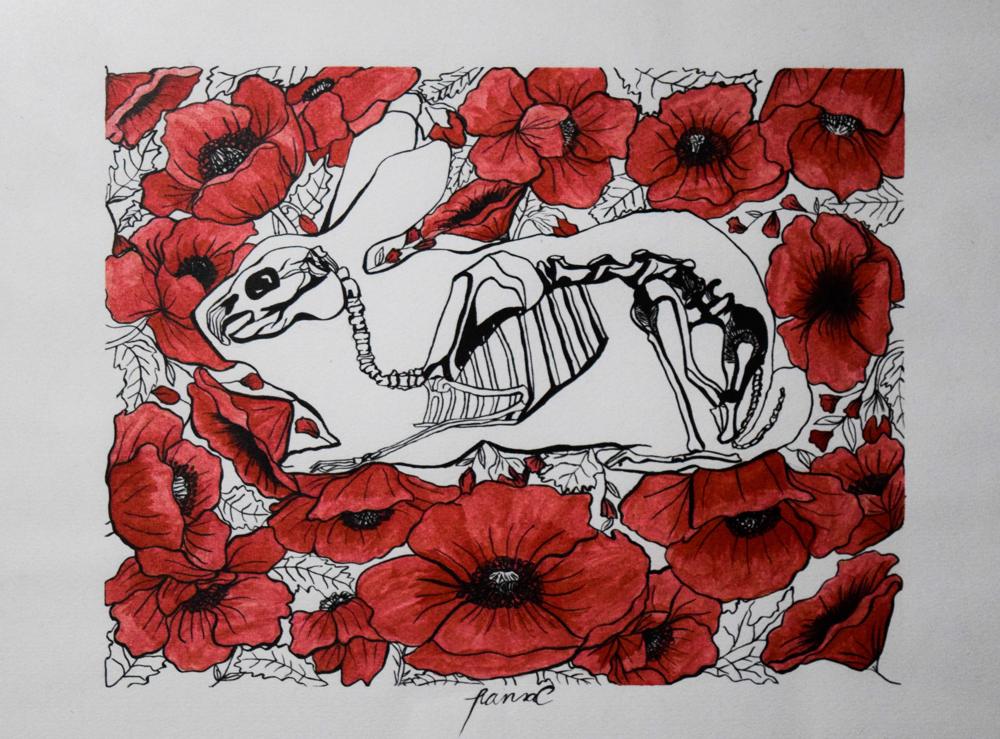
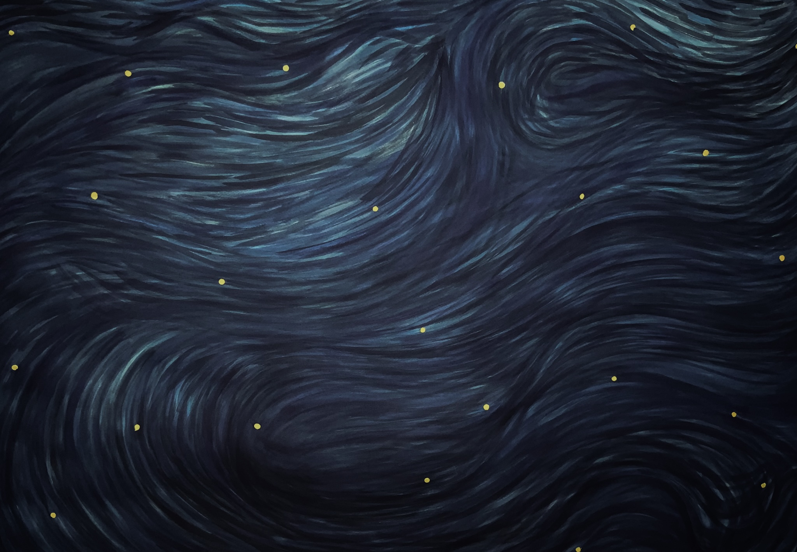
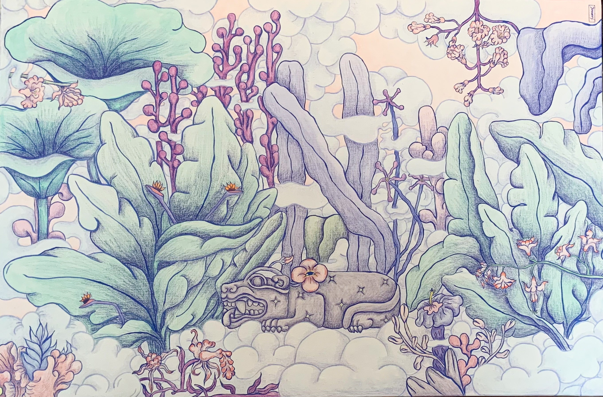
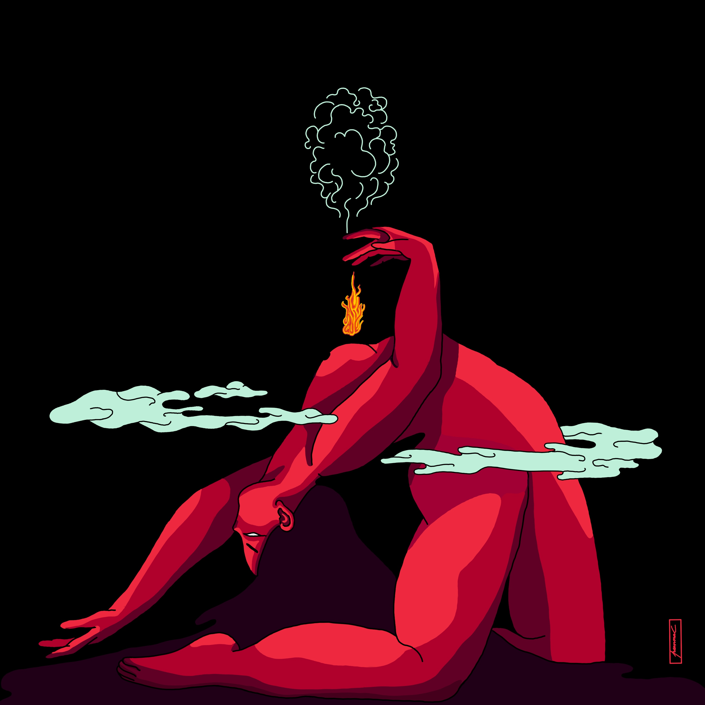
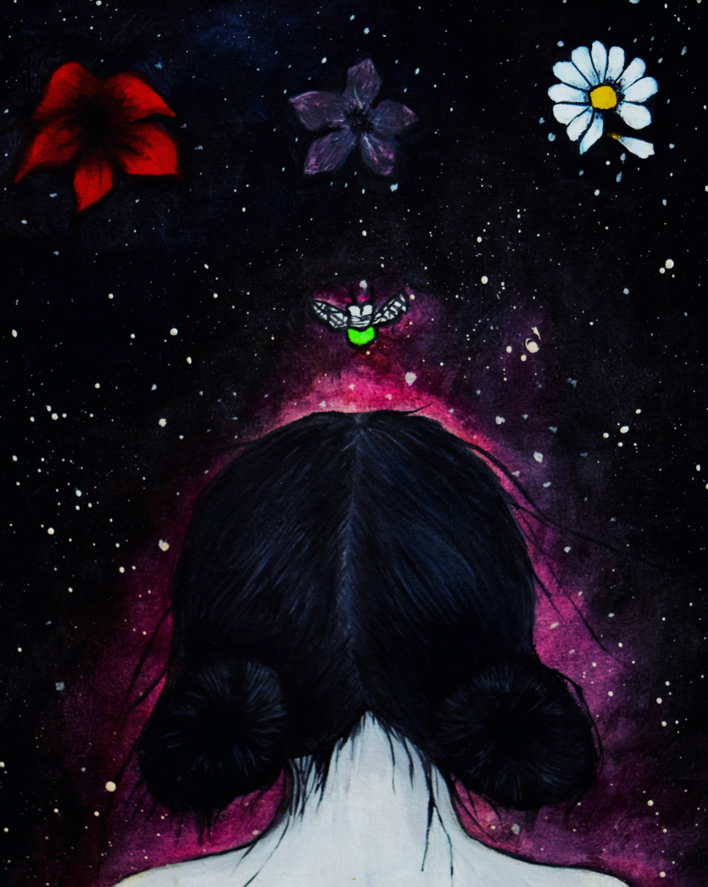
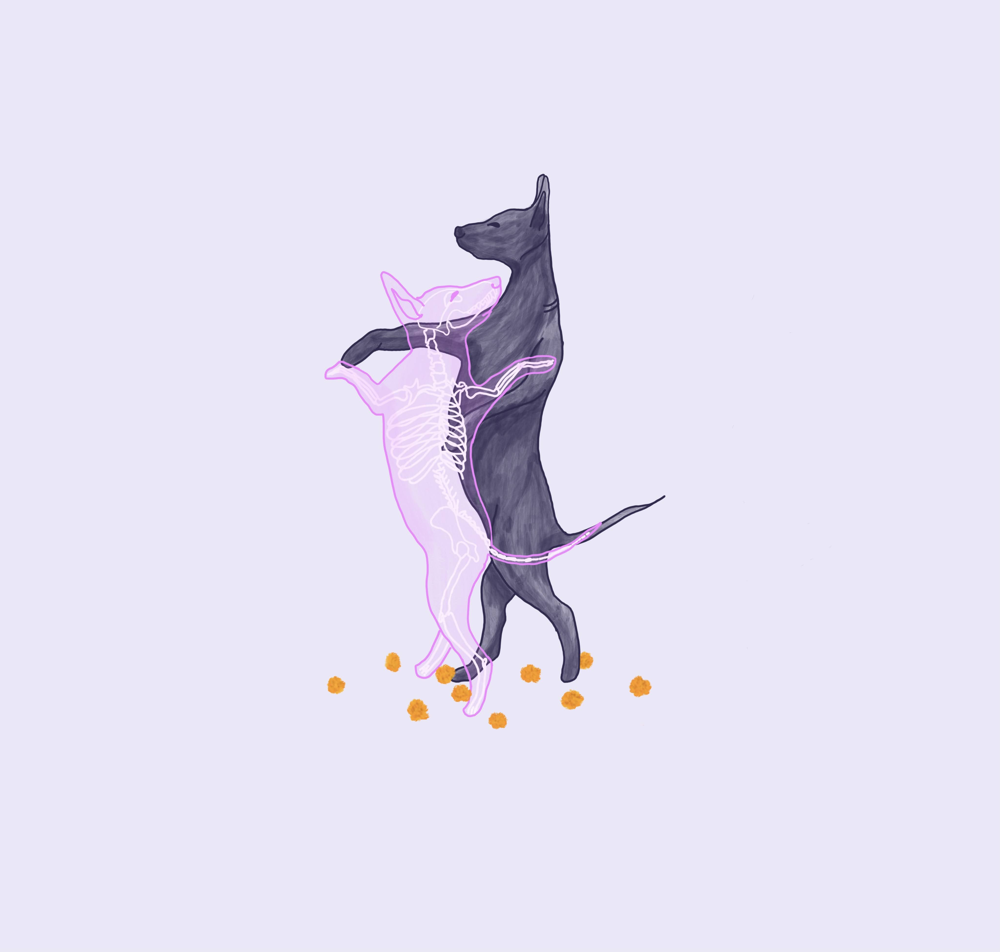
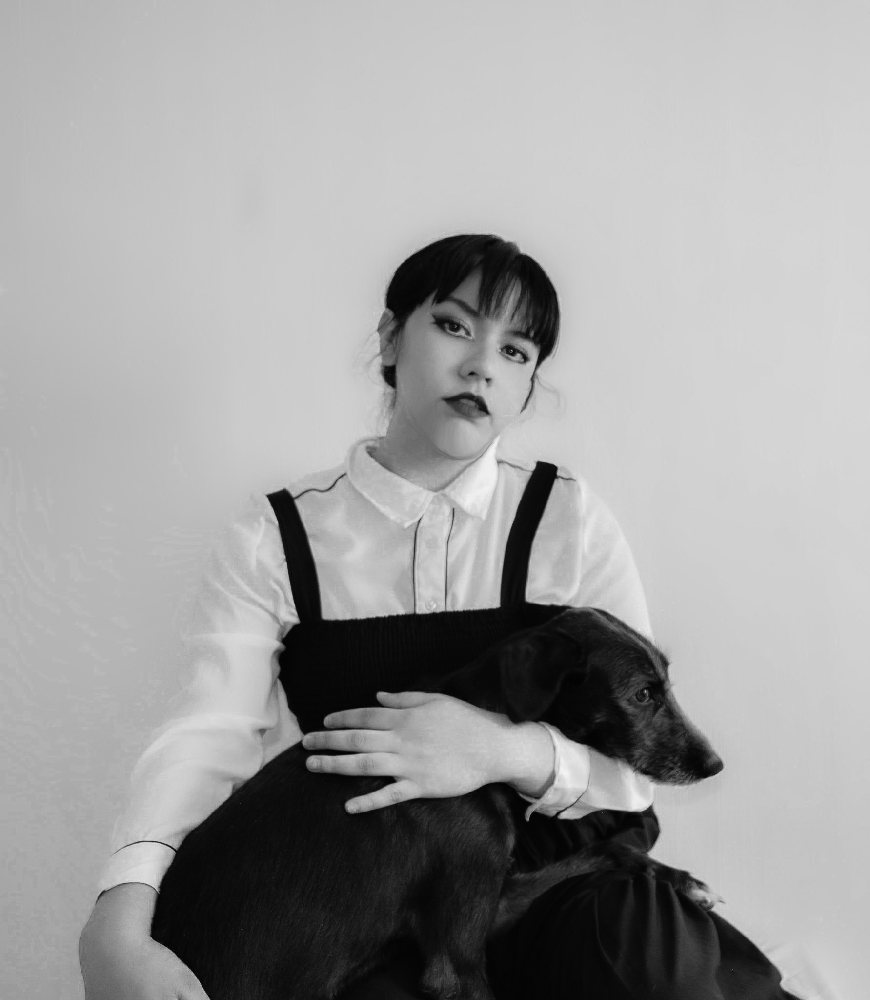

01
02
03
04
05
06
07
08
09
Tu fotografía aquí¡Hola! Soy Ivanna Camarena
Soy artista plástica. Nací y crecí en Guadalajara, Jalisco. Me gusta experimentar diferentes técnicas de dibujo, ilustración, arte digital, pintura, grabado, escultura y textil.
En mi obra me encuentro a mí; así como la relación que tenemos con la naturaleza, lo femenino, la noche, la magia y el misticismo, todo esto con un toque de folclor mexicano.
He trabajado en proyectos de mural en colectivo y de forma independiente. Así como participado en diversas exposiciones plásticas, en colectivo e individuales.